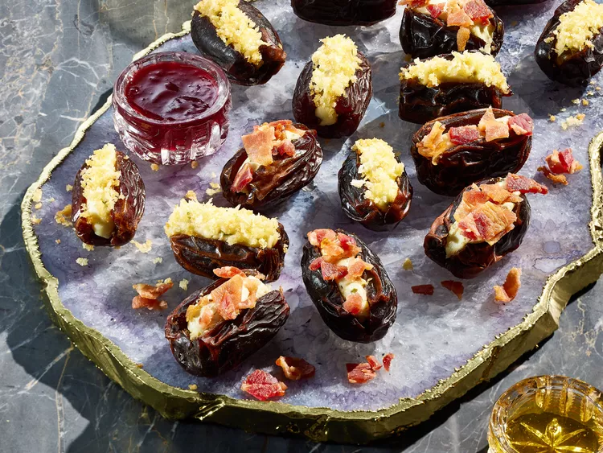

StuffedDates

Description
Stuffed dates are making a comeback. With two flavor variations, you can pick your salty-sweet poison.Stuffed dates are a retro party snack that feel surprisingly modern. Made with just four ingredients (dates, seasoned goat cheese, bacon, and honey), the simple appetizer comes together in a snap. Plus, they're easy to customize! Try making the basic recipe and the spicy jalapeño version below for a crowd-pleasing pair.
Ingredients
- 12 fresh whole Medjool dates
- 1 (4-ounce) package garlic-and-herb goat cheese
- 4 slices bacon, crisp-cooked and crumbled
- 2 tablespoons honey, or to taste, for serving
Steps
- Using a sharp knife, cut a slit in each date and remove pit. Stuff each date with 2 teaspoons goat cheese. Sprinkle with crumbled bacon and serve with honey.
- Stir together 4 ounces softened cream cheese and 2 tablespoons chopped pickled jalapeños in a small bowl. Stuff each date with 2 teaspoons cream cheese mixture.
- In a small skillet, heat 2 teaspoons olive oil over medium heat. Add 1/4 cup panko bread crumbs and cook, stirring constantly, until toasted, about 2 minutes. Sprinkle stuffed dates with toasted bread crumbs and serve with 3 tablespoons warmed raspberry jam.